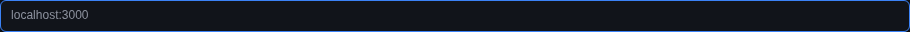
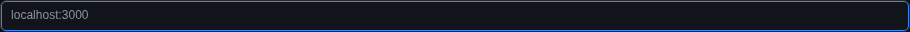
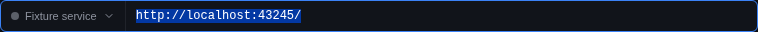
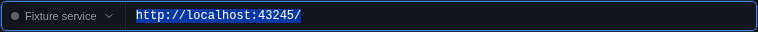
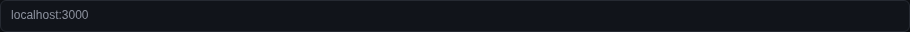

Design tasks / 00013
00013 · Use the focus hairline on the browser URL bars
Problem
BrowserTab.tsx and ServiceBrowserTab.tsx used
focus-within:border-ring on their URL bar frames. This swapped the border color
on focus while the inner input suppressed its outline.
Find every instance
grep -rn "focus-within:border-ring" apps/web/srcScope
| Where | What |
|---|---|
apps/web/src/components/browser/BrowserTab.tsx |
URL bar wrapper |
apps/web/src/components/browser/ServiceBrowserTab.tsx |
URL bar wrapper |
Approach
- Remove
focus-within:border-ring. -
Show the hairline on the wrapper when the inner input has keyboard focus (for example
has-[input:focus-visible]:with the--focus-hairline-colorvariable), or give the input the hairline directly. -
Check that clicking in with a mouse does not show a different result from tabbing in, per
the existing
focus-hairlinebehavior.
Required evidence: before and after
Every slot needs a before image (captured first, before editing any code) and an
after image. Use the same profile, fixture data, theme, viewport and zoom for both.
Save PNGs under design/images/00013/ using the exact file names shown. See
How to capture.
Browser tab URL bar focused by keyboard desktop 1440×900
Tab into the URL field.


Service browser tab URL bar focused by keyboard desktop 1440×900
Open a service preview and Tab into the URL field.


URL bar at rest (should be unchanged) desktop 1440×900
Capture without focus.


Out of scope
- The wider focus audit (task 00014).
Verification
mise run test:logged -- --name web-typecheck -- bun run --cwd apps/web typecheck
NODE_ENV=test mise run test:logged -- --name browser-tabs -- bun --cwd=apps/web test src/components/browser --parallel=2 --only-failures
mise run format:check
mise run lint
React tests in this repo need NODE_ENV=test in build shells. Real-browser
check: use a throwaway dev:test profile named design-00013, never
a production instance.
Acceptance checklist
-
Before images captured on unmodified code for every slot above, and committed
under
design/images/00013/. - After images captured after the change, with the same profile, data, theme, viewport and file names, and committed beside the before images.
- Every image slot on this page shows a picture (the evidence badge reads “6 / 6”).
- I have looked at each pair and written what changed, and anything that did not change that should have, in Notes.
- Hits were classified in Notes, and each decision below is recorded with the option chosen.
-
Type-check and the owning tests pass (commands above);
mise run format:checkandmise run lintpass. - The browser check includes a page reload and, for layout-affecting changes, the narrow viewport.
- DESIGN.md or PRODUCT.md updated if needed: None expected.
- Status set to Done on this page and in the index.
Notes
Classification and decision
Both hits were local focus-style defects: one on the manual browser bar and one on the
service browser bar. Both now share a frame style that draws a 1px hairline inset 2px when
their address input matches :focus-visible. Applying the hairline directly to
the input would reuse the standalone control utility, but would frame only the text portion
of the service bar. The frame keeps the same focus target on both bars and leaves the
service picker’s own focus indicator independent. The hairline uses existing theme colors,
including the destructive color for invalid service addresses and Highlight in forced
colors.
Image comparisons
- Manual browser, keyboard focus — the blue outer border becomes a blue inset hairline inside the neutral border.
- Service browser, keyboard focus — the inset hairline frames the service picker and address together. The picker, service status, and selected URL match the baseline.
- Manual browser, at rest — the two PNGs are byte-for-byte identical.
Chromium captures came from the isolated headless design-00013 profile with the
same dark theme, 1440×900 viewport, 100% zoom, and device scale factor 1. The three before
images were taken on unmodified commit b2c91abb9. Both inputs show the same
hairline with Tab and mouse focus. The browser check also covered reload, both bars at
390×844, picker focus, the service address error and recovery, and forced colors.